<style>body{margin:0;background:#d6e0ea;font:14px Arial;display:grid;grid-template-columns:repeat(4,1fr);gap:8px;padding:8px}figure{margin:0;background:white;padding:8px;height:315px;box-sizing:border-box}img{width:100%;height:270px;object-fit:contain}figcaption{height:25px}</style><figure>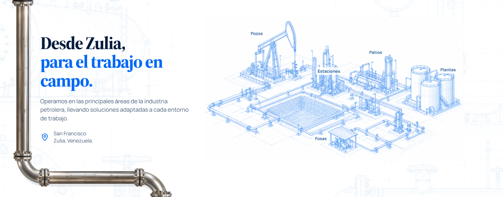<figcaption>nosotros 5 · Desde Zulia,para el trabajo en campo.</figcaption></figure><figure>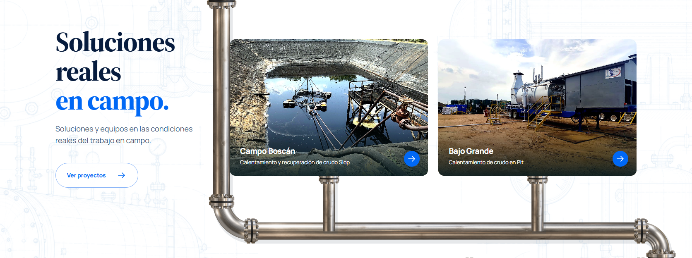<figcaption>nosotros 6 · Soluciones realesen campo.</figcaption></figure><figure>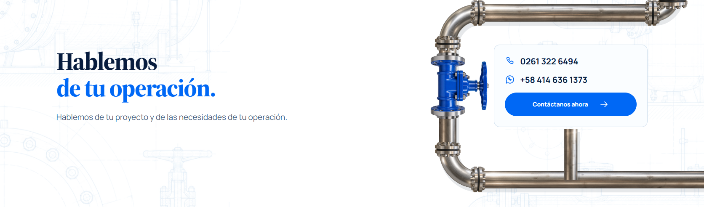<figcaption>nosotros 7 · Hablemosde tu operación.</figcaption></figure><figure>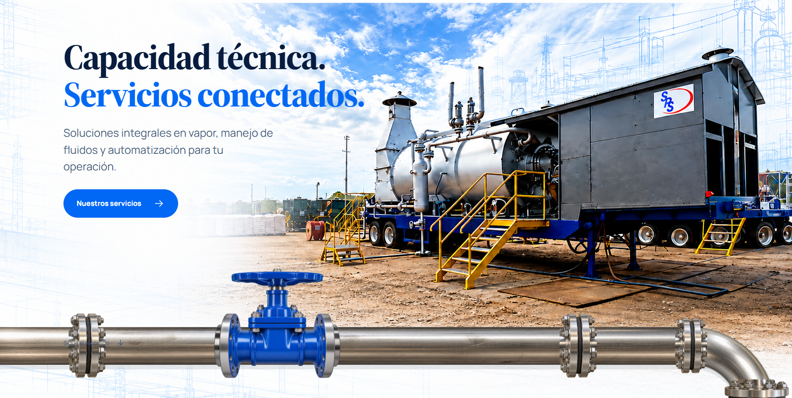<figcaption>servicios 1 · Capacidad técnica.Servicios conectados.</figcaption></figure><figure>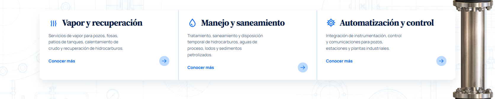<figcaption>servicios 2 · </figcaption></figure><figure>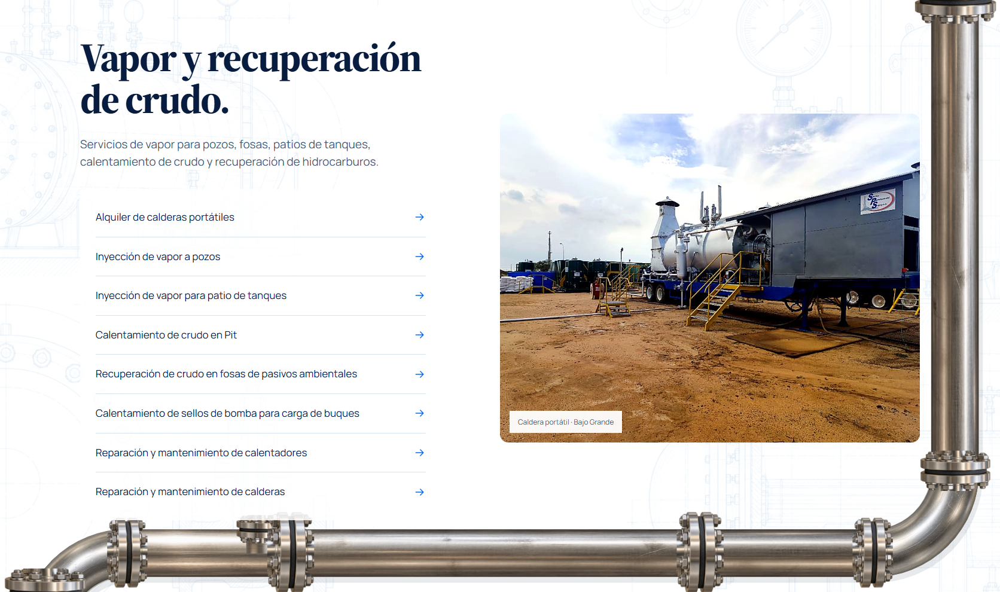<figcaption>servicios 3 · Vapor y recuperación de crudo.</figcaption></figure><figure>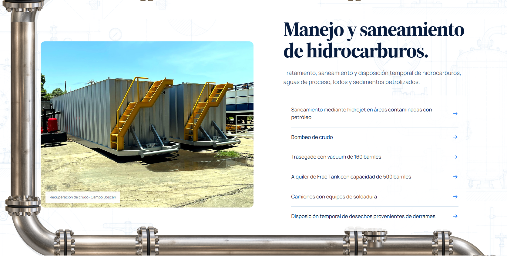<figcaption>servicios 4 · Manejo y saneamiento de hidrocarburos.</figcaption></figure><figure>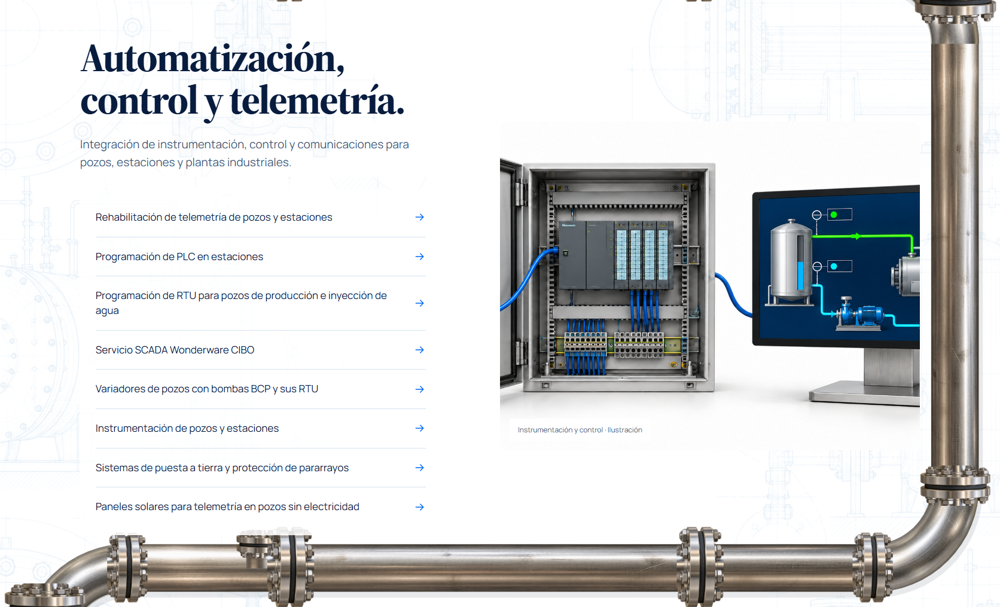<figcaption>servicios 5 · Automatización, control y telemetría.</figcaption></figure><figure><figcaption>servicios 6 · ¿Qué necesitatu operación?</figcaption></figure><figure>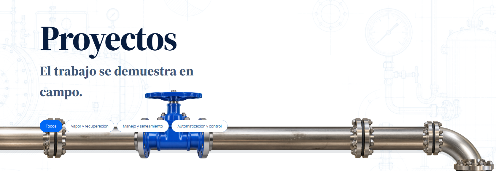<figcaption>proyectos 1 · Proyectos</figcaption></figure><figure>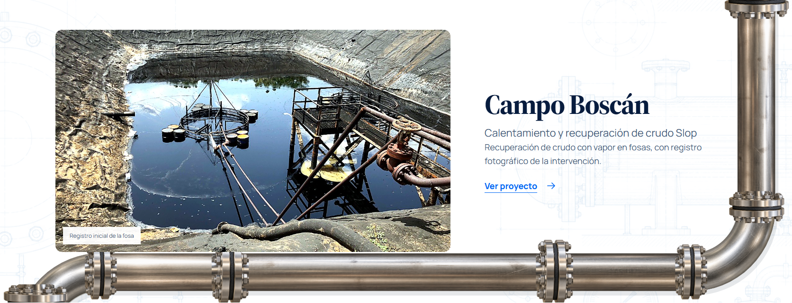<figcaption>proyectos 2 · Campo Boscán</figcaption></figure><figure>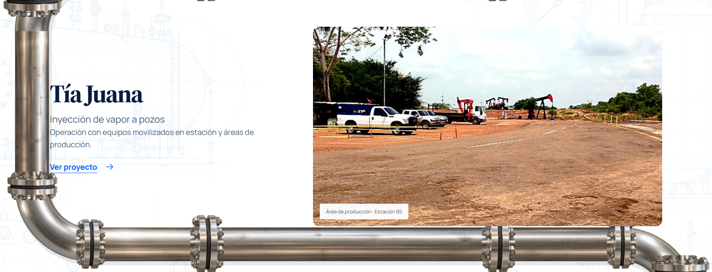<figcaption>proyectos 3 · Tía Juana</figcaption></figure>